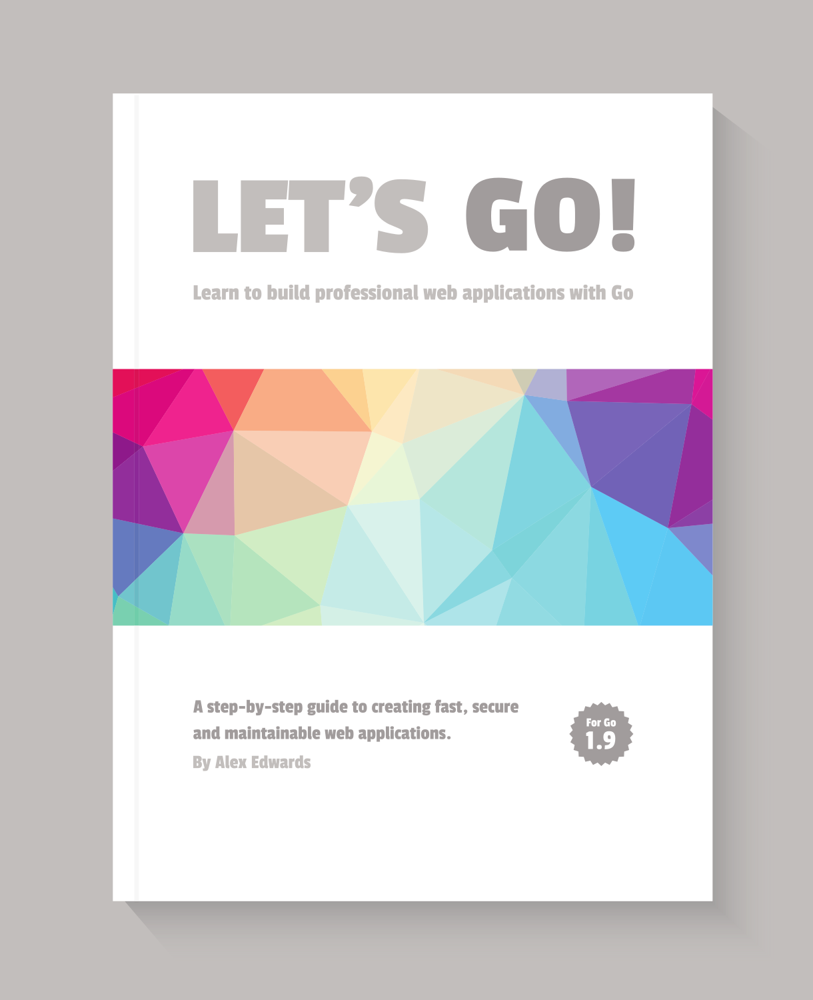

Let's Go teaches you step-by-step how to create fast, secure and maintainable web applications using the fantastic programming language Go.
The idea behind this book is to help you learn by doing. Together we'll walk through the start-to-finish build of a web application — from structuring your workspace, through to session management, authenticating users and securing your server.
Building a complete web application in this way has a number of benefits. It helps put the things you're learning into context, it demonstrates how different parts of your codebase link together, and it forces us to work through the edge-cases and difficulties that come up when writing software in real-life. In essence, you'll learn more that you would by just reading Go's (great) documentation or standalone blog posts.
By the end of the book you’ll have the understanding — and confidence — to build your own production-quality web applications with Go.
Although you can read this book cover-to-cover, it's designed specifically so you can follow along with the project build yourself.
Break out your text editor, and happy coding!
— Alex